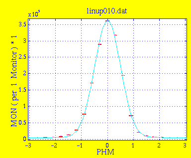
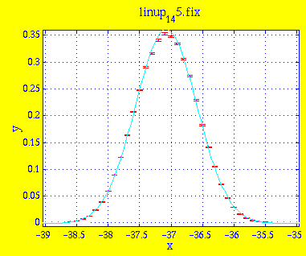

Amplitude 3.5718e+05 7.8239e+03 Centre 6.7660e-03 9.1312e-03 Width 5.0098e-01 7.1854e-03 Background 4.5602e+03 4.4382e+02 * Chi Squared 449.4147
| Mosaicity | Peak width |
|---|---|
| 40 | 0.446 |
| 45 | 0.489 |
| 50 | 0.513 |
| 55 | 0.527 |
| 60 | 0.546 |
This is the result linup_1_45.sim of simulation with 45' mosaicity. Instrument definition linup-1.instr.

Amplitude 3.6271e-01 2.3164e-03 Centre -3.7077e+01 1.8214e-03 Width -4.8897e-01 1.9908e-03 Background -1.3489e-03 3.8135e-04 * Chi Squared 13.9592We observe that the peak is 0.077° off-center, reflecting an asymetry in the beam channel from the cold source to the monochromator. In the following simulations, PHM is set to -37.077°.